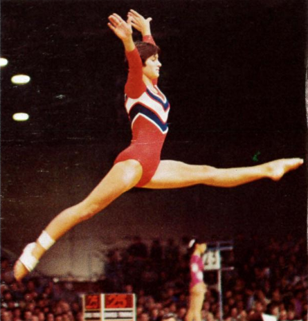

Donna Turnbow (USA)

1977 US National Champion
1978 Champions All AA Gold Medalist
1978 World Championships Team Member
Donna trained at KIPS with coach Jim Fountaine, and was the USA junior AA (1975) and senior AA (1977) champion. After leaving international competition,
she competed on the gymnastics team at the University of Southern California.
Competition Results
1972
Southern California Class III Championships (Children): 2nd AA
1973
California Class I Championships (Children): 2nd AA
Jr. USGF Championships: 20th AA
KIPS v. Fresno Gym Club:5th AA, 2nd V, 3rd B
1974
Fiesta Bowl Invitational: 3rd AA
Jr. USGF Championships: 4th AA, 2nd V, 3rd UB, 4th B
Santa Monica Gymfest: 2nd AA, 1st FX, 3rd B
1975
Fiesta Bowl Invitational: 2nd AA, 1st UB
International Junior Championships: 5th AA
Jr. USGF Championships: 1st AA
KIPS Invitational: 1st AA
1976
1st Elite National Qualification Meet: 22nd AA
Concordia International (Gymnix): 1st Team, 3rd FX
Emerald Empire Cup: 2nd V
Fiesta Bowl Invitational: 4th AA, 1st UB, 2nd FX
KIPS Invitational: 4th AA, 2nd UB
North Shore Invitational: 1st Team, 4th AA
US Olympic Trials: 23rd AA
1977
1st National Elite Qualification Meet: 2nd AA
American Cup: 2nd AA
Antibes International: 5th AA
Emerald Empire Cup: 2nd AA, 2nd V, 2nd FX, 3rd UB
Far West Invitational: 2nd AA, 1st UB, 2nd B
KIPS Invitational: 1st AA, 1st V, 1st UB, 2nd FX
USA Championships: 1st AA, 2nd FX, 3rd UB, 4th V
USA-ROM Dual Meet: 2nd Team, 3rd AA
1978
Champions All: 1st AA
Chunichi Cup: 14th AA
Pacific Rim International: 6th AA
SUI-USA-RSA: 1st Team, 2nd AA
USA Championships: 2nd AA
World Championships: 5th Team
World Championships Team Trials:
1st AA
1979
Albuquerque Journal Invitational: 1st AA, 2nd UB
Dial National Invitational: 2nd AA , 5th V, 5th UB, 5th FX
Far West Invitational: 2nd AA, 1st FX
Fiesta Bowl Invitational: 1st AA, 1st UB
KIPS Invitational: 5th AA, 1st UB, 1st FX
Mardi Gras Invitational: 3rd AA
National High School Invitational: 3rd AA
USA Championships: 9th AA, 5th B
World Championships Team Trials: 25th AA
1983
UCLA Invitational: 3rd Team, 5th AA, 3rd B, 3rd FX
This page was created on August 13, 2020.
© Gymn Forum